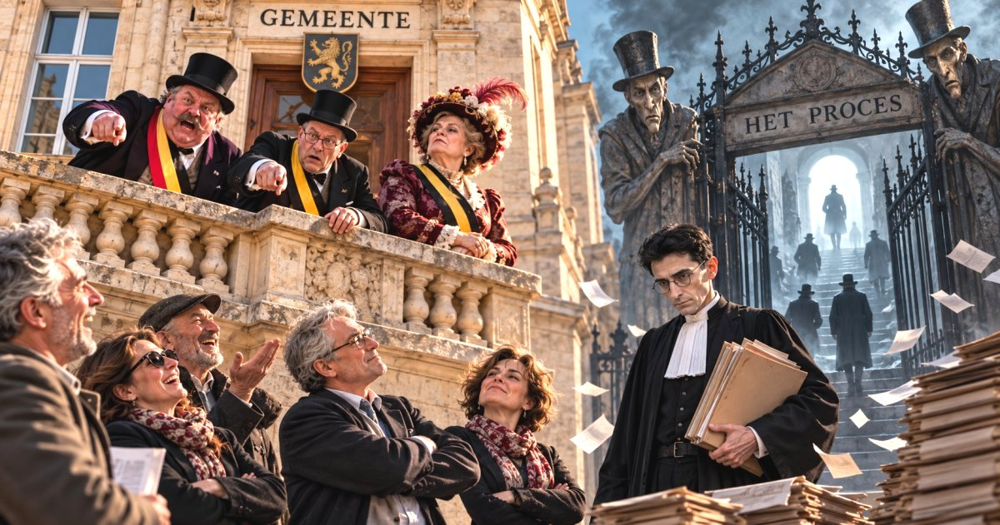

In de besluitenlijst van het college van burgemeester en schepenen van 5 oktober 2026 wordt onder het agendapunt
Elektronische belaging en laster gemeente De Panne, het volgende vermeld:
Aanstelling raadsman. Meester Kristiaan Vandenbussche, advocaat gespecialiseerd in strafrecht wordt aangesteld om de belangen van de gemeente te behartigen in twee dossiers waarbij het gemeentebestuur o.a. elektronisch wordt belaagd door enkele burgers.
Het deed ons denken aan het boek van Franz Kafka, "Het Proces". Maar vermits het niet tegen ons is gericht, weten we niet over wat het juist gaat ...
